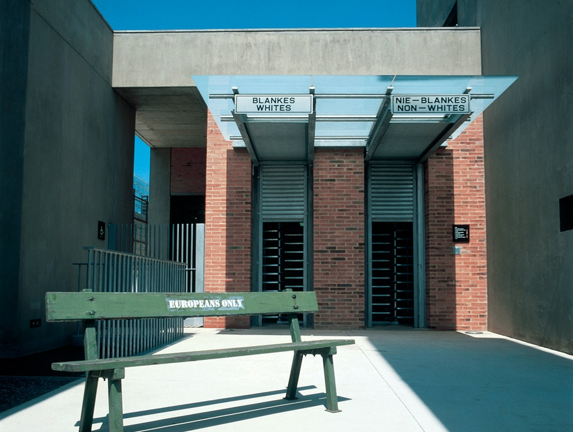
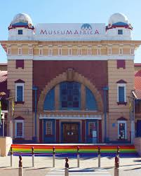
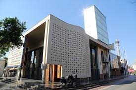

Apartheid Museum
The Apartheid Museum, the first of its kind, illustrates the rise and fall of apartheid.
It is an emotional journey designed to encourage visitors to empower themselves with knowledge to prevent such horrors from happening again.
The museum gardens offer visitors a space for reflection.
The landscape is South African, and conveys the harsh beauty of our country.
The exhibits have been assembled and organised by a multi-disciplinary team of curators, film-makers, historians and designers.
They include provocative film footage, photographs, text panels and artefacts illustrating the events and human stories that are part of the horrific period in our history, known as apartheid.

Museum Africa
Museum Africa is Johannesburg’s social and cultural history museum. It is located in what was once the city’s fruit and vegetable market, a large and impressive heritage building that occupies an entire city block. The museum has a large collection of artefacts, of which only a small number are usually on display at any one time. The large museum space is also used to hold regular temporary exhibitions.

Constitution Hill Human Rights Precinct
There is perhaps no other site of incarceration in South Africa that imprisoned the sheer number of world-renowned men and women as those held within the walls of Constitution Hill’s Old Fort, Women's Jail and Number Four. Nelson Mandela. Mahatma Gandhi. Joe Slovo. Albertina Sisulu. Winnie Madikizela-Mandela. Fatima Meer. They all served time here, but the precinct also confined tens of thousands of ordinary people during its 100-year history. They were men and women of all races, creeds, ages and political agendas; children too, the everyman and the elite. In this way, the history of every South African lives here
